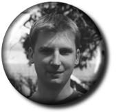
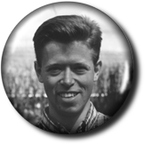

Styrelsen för D-sektionen är förtroendevalda under ett
år. De väljs på våren och förhoppningsvis
får de ansvarsfrihet ett år därefter. De har till uppgift
att sköta sektionen i medlemmarnas intressen. Till sin hjälp
har de olika utskott. Vill du kontakta styrelsen,
kan du göra det på
dstyret@cyd.liu.se.
|
Joacim Olsson |
Ordförande
En av huvuduppgifterna för sektionens ordförande är att
representera D-sektionen på LinTeks styrelsemöten och Fullmäktige.
Här sitter han för att ta tillvara sektionens intressen och för
att ge LinTek sektionens stöd och hjälp, men också för
att se till att det som händer inom LinTek kommer ut till sektionens
medlemmar.
|
Vice ordförande
Att vara vice ordförande i sektionsstyrelsen innebär bland
annat att man skall vara "stand in" när ordföranden
inte kan närvara. Detta kan innebära att leda styrelsemöten
och gå på de möten där ordföranden sitter med
normalt. Som vice ordförande är du även ansvarig för
sektionens seniorverksamhet. Tanken med seniorverksamheten är att
försöka behålla kontakten med de som tar examen och försvinner
från högskolan.
Man är också ansvarig för en ny-teknologi-dag; Dataforskning För
Teknologer, där man bjuder in ett antal dataföretag som får föreläsa om
det nyaste.
|
Ingen bild, tyvärr. Daniel Karlsson |

Åsa Hagström |
Sekreterare
Exakt vad en sekreterare ska göra kan för gemene man tyckas
synnerligen självklart. D-sektionens sekreterarpost är inget
undantag. Denne ska boka in lokaler för möten, skriva föredragningslistor
och kalla till möten. Under ett möte ska sekreteraren föra
protokoll. Efteråt ska detta renskrivas och sedan anslås och
distribueras till de som (skulle) närvarat. Dessutom tillkommer ansvaret
för sektionens stadgar.
|
KassörKassören ansvarar för sektionens ekonomi. Huvuduppgiften är att sköta bokföringen, vilken omfattar drygt 300 verifikationer per läsår. Andra uppgifter är försäljning av sektionströjor och tygmärken, utdelning av medaljer samt att ha kontroll över nycklarna till sektionsrummen. Full koll är också bra att ha. |
Ingen bild, tyvärr.
Aseel Ibrahim |
|
Bosse Lincoln |
Info-chefInformationschefen ansvarar framför allt för sektionens interna informationsspridning. Han informerar medlemmarna om styrelsens och sektionens arbete, genom sina medarbetare D-factoredaktören och WWW-ansvarig. Infochefen ger också ut styrelsens lilla organ D:s information ett par gånger per år när det behövs. |
VärkställareVärkställaren är D-sektionens hustomte eller vaktmästare. Denne försöker hålla ordning i D-sektionens bägge rum; administrerar städning och ser till blommorna blir vattnade. Värkställaren ska också ordna mat och praktiska detaljer vid sammankomster, t ex årsmötet. I det stora hela skall värkställaren hjälpa styrelsen verkställa de beslut som fattas. |
Andreas Larsson |
|
Andreas Johansson |
Studienämndsordförande DStudienämndsordföranden för D, SnOrdfen, har till uppgift att samordna sektionens studiebevakning för D-linjen. Detta görs genom att årskursråd och examinatorsmöten hålls, ett per period och årskurs. SnOrdfen sitter som ordinarie ledamot i UtbildningsNämnd D, deltar i Läro- och Timplansgruppens arbete (LoT) samt sitter i LinTeks utbildningsutskott (UU). SnOrdfen samordnar sektionens TRIIS:ar och ska ha god kontakt med sektionens medlemmar och examinatorer. |
Chief-Groupie
Det första man gör som Chief är att ta ut ett festeri,
detta görs så snart som möjligt efter vårmötet.
Man har då hjälp av sin Cash-groupie, som också väljs
på vårmötet, samt eventuellt av två pryosar från
året innan. Jobbet består sedan till väldigt stor del
av planering - vad som ska tas upp på nästa möte, vad man
inte ska glömma bort att göra inför en fest etc. Som Chief
får du också delta i möten med styrelsen och med andra
festerier etc, vilket kan ta mer tid än man tror, så man bör
kunna planera sin tid väl för att hinna med att plugga också.
|
Patrik Jonasson |
| 
Fredrik Nanneson |
Studienämndsordförande ITStudienämndsordföranden för IT, IT-SnOrdfen, har samma uppgift som D-SnOrdfen, men för IT. Detta görs precis på samma sätt genom att årskursråd och examinatorsmöten hålls, ett per period och årskurs. IT-SnOrdfen sitter som suppleant i UtbildningsNämnd D, och deltar i Läro- och Timplansgruppens arbete (LoT). |
STYRELSENS ADJUNGERADE
SponsoransvarigSponsoransvarig är den som drar in pengar till sektionen, genom att hålla kontakten med de sponsorer som sektionen har. Givetvis är sponsoransvarig ständigt på jakt efter fler sponsorer. Hon deltar också aktivt i MaFU, marknadsföringsutskottet. |
Marta Pilawa |
| 
Joacim Forssell |
MaFU-ordförande
MaFU-ordföranden är som man skulle kunna misstänka ordförande
för sektionens marknadsföringsutskott. Detta är en samling
trevliga D:are och IT:are som försöker få sektionen att
synas utåt, och få företag att visa sig för sektionen.
Visar upp sig utåt gör man genom att åka på olika
sorters missioneringsresor till gymnasier och mässor, och genom att
ha träffar med företagsrepresentanter vid olika arbetsmarknadsdagar.
|